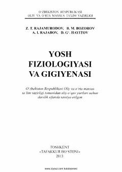

YFBolalar organizmining yoshga oid fiziologiyasi va gigiyenasi asoslarini o'rgatuvchi darslik.
Mazkur darslikda bolalar tug'ilganidan balog'at yoshiga yetguniga qadar bo'lgan davrlarda organizmda kuzatiladigan fiziologik, morfologik va immunologik jarayonlarning geteroxronik tarzda kechish mexanizmlari tushuntirib berilgan. Shuningdek, bolalarning jadal o'sish va rivojlanish davrlarida sanitariya va gigiyena qoidalariga rioya qilish masalalari yoritilgan. Kitob oliy o'quv yurtlari talabalari, pedagoglar va mutaxassislar uchun mo'ljallangan.